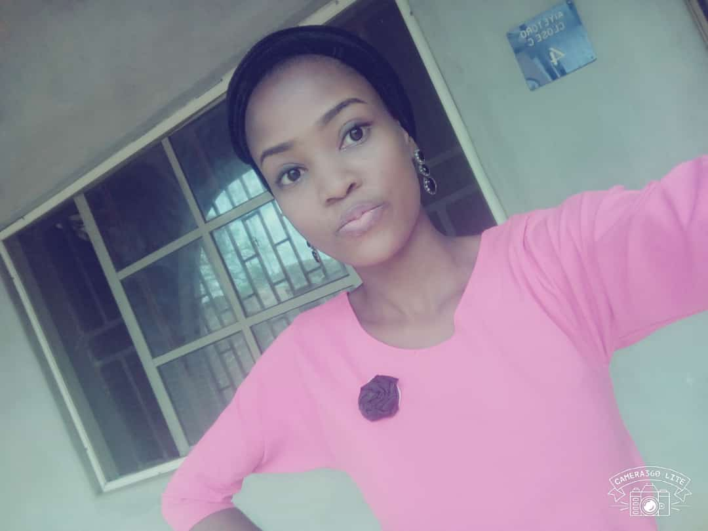

MY ACHIEVEMENT
I am very happy today when I looked back and remember where I started from.It is God's grace that has kept me till today,all glory to Jesus the only one who deserve it.
God has been so faithful to me and my family, I went through both thick and thin but in all my testimony is full,despite the trials I still have Joy
A very big thanks to my parents,(the best Parents in the whole world)thanks for your unprecedented love and support.I can not love you less
To my siblings,you guys are the best.
before I got admitted to kwasu I was a novice programer,but today I can boldly design a web and do some programming.
Spiritually I am growing by God's Grace,I have been able to join some unit in my church which is helping me and again I count it all joy to be a member of ECWA church Malete.
It is a great priviledge to be a student of kwara state University, studing the best course ever LIBRARY AND INFORMATION SCIENCE.
I am so proud to be a LIBARIAN.
Again I have gain an entreprenuerer skills through one of my courses titled"creativity and innovation"GNS203, I now know how to make Liquid soap,Hair creame,napel,Rossette and Elmulsion paint.
click on this for body backgroundhere
go to my homepage